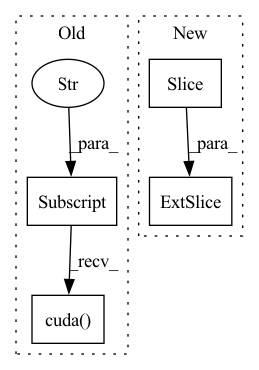

Pattern ID :6463

Before Change
else:
img_coords = T_c2_c0[:, :, :3].bmm(cam_coords) + T_c2_c0[:, :, 3].unsqueeze(-1)
K2, K3, b = cam_calib["K2"].cuda(), cam_calib["K3"].cuda(), cam_calib["b"].cuda()
self.M, self.Q = self.set_camera_model_matrices(K2[0, 0], K2[0, 2], K2[1, 2],
K3[0, 0], K3[0, 2], K3[1, 2], b)
// Expand fixed matrices to the correct batch size
After Change
batch_size = cam_coords.size(0)
K2, K3 = cam_calib["K2"].cuda(), cam_calib["K3"].cuda()
T_c2_c0 = cam_calib["T_c2_c0"][:batch_size, :, :].float().cuda()
T_c3_c0 = cam_calib["T_c3_c0"][:batch_size, :, :].float().cuda()
self.b = abs(T_c3_c0.bmm(se3_inv(T_c2_c0))[0, 0, 3])
self.fl = K2[0, 0, 0]
In pattern: SUPERPATTERN
Frequency: 3
Non-data size: 4
Instances
Fragment ID: 22374357
Project Name: utiasasrl/hero_radar_odometry
Commit Name: 4eb1bdf7c40f496a3cd9fb79125911fcbf880f89
Time: 2020-08-17
Author: mona.gridseth@robotics.utias.utoronto.ca
File Name: utils/stereo_camera_model.py
M Class Name: StereoCameraModel
N Class Name: StereoCameraModel
M Method Name: camera_model(3)
N Method Name: camera_model(3)
M Parent Class: nn.Module
N Parent Class: nn.Module
M File Name: utils/stereo_camera_model.py
N File Name: utils/stereo_camera_model.py
M Start Line: 141
M End Line: 154
N Start Line: 143
N End Line: 160
'>
Before Change
batch_size, height, width = disparity.size()
K2, K3, b = cam_calib["K2"].cuda(), cam_calib["K3"].cuda(), cam_calib["b"].cuda()
self.M, self.Q = self.set_camera_model_matrices(K2[0, 0], K2[0, 2], K2[1, 2],
K3[0, 0], K3[0, 2], K3[1, 2], b)
// Expand fixed matrices to the correct batch size
After Change
batch_size, height, width = disparity.size()
K2, K3 = cam_calib["K2"].cuda(), cam_calib["K3"].cuda()
T_c2_c0 = cam_calib["T_c2_c0"][:batch_size, :, :].float().cuda()
T_c3_c0 = cam_calib["T_c3_c0"][:batch_size, :, :].float().cuda()
self.b = abs(T_c3_c0.bmm(se3_inv(T_c2_c0))[0, 0, 3])
self.fl = K2[0, 0, 0]
'>
Fragment ID: 22374356
Project Name: utiasasrl/hero_radar_odometry
Commit Name: 4eb1bdf7c40f496a3cd9fb79125911fcbf880f89
Time: 2020-08-17
Author: mona.gridseth@robotics.utias.utoronto.ca
File Name: utils/stereo_camera_model.py
M Class Name: StereoCameraModel
N Class Name: StereoCameraModel
M Method Name: inverse_camera_model(4)
N Method Name: inverse_camera_model(4)
M Parent Class: nn.Module
N Parent Class: nn.Module
M File Name: utils/stereo_camera_model.py
N File Name: utils/stereo_camera_model.py
M Start Line: 178
M End Line: 191
N Start Line: 185
N End Line: 202
'>
Before Change
if is_classification:
labels = batch["label"].long().cuda().contiguous()
else:
labels = batch["label"].cuda().contiguous()
attention_mask = batch["padding_mask"].float().cuda().contiguous()
max_seq_len = batch["seq_len"].long().max().item()
max_seq_len = (max_seq_len + 127) // 128 * 128
After Change
labels = labels[:, :max_seq_len]
elif labels.dim() == 3:
// contact prediction
labels = labels[:, :max_seq_len, :max_seq_len]
return tokens, labels, attention_mask
'>
Fragment ID: 22374355
Project Name: thudm/proteinlm
Commit Name: d9914180a9bc824bc1dcaebc67901759ef992f55
Time: 2021-05-31
Author: xyj_thu@163.com
File Name: pretrain/tasks/protein/finetune_utils.py
M Class Name: AnonimousClass
N Class Name: AnonimousClass
M Method Name: process_batch(1)
N Method Name: process_batch(2)
M Parent Class:
N Parent Class:
M File Name: pretrain/tasks/protein/finetune_utils.py
N File Name: pretrain/tasks/protein/finetune_utils.py
M Start Line: 8
M End Line: 16
N Start Line: 8
N End Line: 26